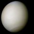
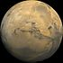
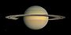
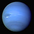

Planets are both large enough to have achieved hydrostatic equilibrium
and have cleared their neighborhoods of similar objects.
There are four terrestrial planets and four gas giants in the Solar System.
The latter combined comprise more than 99 percent of
the mass in the Solar System excluding that of the Sun.
| Picture | Name | Mean Distance to the Sun / km | Orbital Period / years |
|---|---|---|---|
|
| Mercury | 57,909,175 | 0.2408467 |
|  | Venus | 108,208,930 | 0.61519726 |
|
| Earth | 149,597,890 | 1.0000174 |
|  | Mars | 227,936,640 | 1.8808476 |
|
| Jupiter | 778,412,010 | 11.862615 |
|  | Saturn | 1,426,725,400 | 29.447498 |
|  | Neptune | 2,870,972,200 | 84.016846 |
|
| Uranus | 4,498,252,900 | 164.79132 |
| Source: Wikipedia | |||